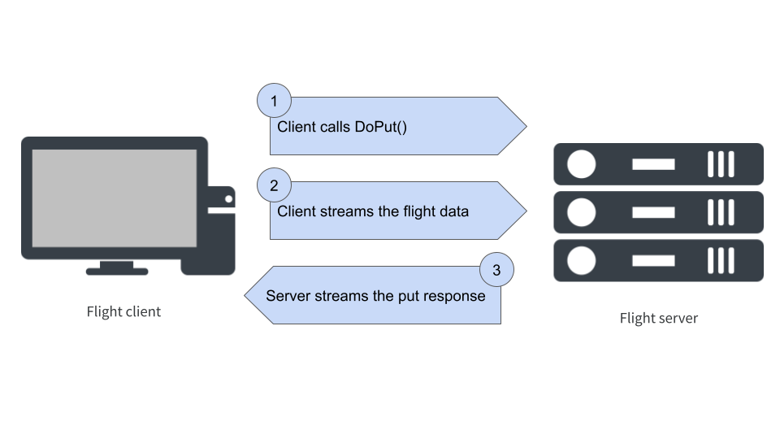

![]()
library(arrow)
library(reticulate)
use_miniconda("base")This is a post about Arrow Flight. I will probably tell a whimsical anecdote to open this post. Or not. Who knows. Maybe I’ll leave the introductory paragraph like this. That would be pretty on-brand for me actually.
The what and why of Arrow Flight
The central idea behind flight is deceptively simple: it provides a standard protocol for transferring Arrow data over a network. But to understand why this is a Big Deal, you need to have a good sense of what the Arrow ecosystem is all about. For that, I found it helpful to go all the way back1 to the original announcement of flight by Wes McKinney. Here’s how he explained the motivation:
Our design goal for Flight is to create a new protocol for data services that uses the Arrow columnar format as both the over-the-wire data representation as well as the public API presented to developers. In doing so, we reduce or remove the serialization costs associated with data transport and increase the overall efficiency of distributed data systems. Additionally, two systems that are already using Apache Arrow for other purposes can communicate data to each other with extreme efficiency.
To put this in context, it helps to have a little recap of how the project has grown: Arrow was originally introduced to provide an efficient and language-agnostic standard for representing tabular data in-memory, but as the project has grown it has necessarily expanded in scope. For example, storing data in-memory is not entirely useful if you can’t manipulate it, so Arrow now supplies a powerful compute engine that underpins both the arrow package in R and the pyarrow library in Python, and several others besides. In other words, the compute engine has been developed to solve a practical data science problem.
Arrow Flight evolved from a similar practical concern. It’s pretty trivial to point out that we live in a networked world now, and as consequence it is hard to avoid situations where the data to be analysed are stored on a different machine than the one that does the analysis. In my earlier posts on reticulate and rpy2 I talked about how to efficiently share an Arrow data set between languages, but I implicitly assumed in those posts that the R process and the Python process were running on the same machine. The moment we have processes running on different machines, those tricks don’t work anymore!
Flight is designed to solve this problem. It’s not a fancypants protocol with lots of different parts. It exists for one purpose: it makes it super easy to transfer Arrow-formatted data. That’s it. It’s pretty flexible though, and you can build other stuff on top of flight, but the design of flight is deliberately simple. It’s meant to be pretty minimal, so you can “just use it” without having to think too hard or do any of the obnoxious implementation work yourself.

Prerequisites
There are a couple of prerequisites for this post. Specifically I’ll assume you have the arrow and reticulate packages installed in your R environment, and similarly that your Python environment has pyarrow installed. If you’re only interested in the Python side, you probably don’t need either of the R packages, but R users will need to have the pyarrow installation because the R flight implementation builds on pyarrow.
An R example
The implementation of Arrow Flight varies a little across languages. In this post I’m going to focus on the two languages I use most – R and Python – but there’s nothing stopping you from using other languages. For example, the book In-Memory Analytics with Apache Arrow by Matt Topol has worked examples using C++ and Go, in addition to Python.
For the purposes of this post I’m going to start with R because the arrow package in R exposes a “high-level” interface that will allow us to start using a flight server without having to dive deeply into how it all works. However, as we’ll see, there are some limitations to this approach – not least of which is the fact that the R implementation turns out to secretly be a Python implementation under the hood – and as the post progresses I’ll pivot to Python in order to unpack some of the lower-level functionality.
To do this I’ll need access to the arrow and reticulate packages, and I’ll need to make certain that the Python environment is one that has pyarrow installed. For my machine, the commands to do this look like this:
It may be a little different for you depending on your configuration. For more information on this, take a look at the reticulate post I wrote recently.
The flight server
Okay, so let’s get started by thinking about the simplest possible scenario for using a flight server. In this set up all we want the server to do is to act as a “cache” for Arrow tables. Clients can upload tables to the server, download tables from the server, and so on. That’s all we’re really trying to accomplish, and happily for us this use case is supported out of the box in R.
Here’s how it works. As I mentioned earlier, R doesn’t actually implement the flight protocol itself: it’s just a wrapper around the Python tools. What that means is the underlying flight server is actually written in Python, and if we want to start that server running from R we have to call the load_flight_server() function that will allow us access to this server from R. Conveniently, the arrow R package comes bundled with a “demo” server that already provides the server side functionality that we want, and I can import it like this:
server_class <- load_flight_server("demo_flight_server")When I do this, all I’ve done is obtain access to the relevant Python code. I haven’t created a server yet and I haven’t started it running either. Create an instance of the “demo server”, I call the DemoFlightServer() method attached to the server_class object:
server <- server_class$DemoFlightServer(port = 8089)We have now defined a server that, once started, will run on port 8089. The server object has a serve() method that I can call to start it running:
server$serve()I’ve written a short script called start_demo_server.R that bundles all these operations together:
start_demo_server.R
The easiest way to start a server running in its very own R process would be to execute this script – or a suitably modified version that refers to an appropriate Python environment and server port – at the terminal, which I could do like this:
Rscript start_demo_server.R &This would start an R process as a background job that creates a server and start it running. As an alternative, if you’re comfortable with using the callr package, you can use callr::r_bg() to create a child R process from your current one. The child process will run in the background, and we can start start the server within that R session without blocking the current one. This code will do exactly that:
r_process <- callr::r_bg(function() {
reticulate::use_miniconda("base")
demo <- arrow::load_flight_server("demo_flight_server")
server <- demo$DemoFlightServer(port = 8089)
server$serve()
})Regardless of what method you’ve chosen, I’ll assume that the demo server is now running quietly in the background on port 8089.
The flight client
Now that I have this server running, I’ll define a flight client in my current R session that can interact with it. To do that, I call flight_connect():
client <- flight_connect(port = 8089)Perhaps unsurprisingly, the R object client is a wrapper around a Python flight client. It comes with various methods that implement low-level flight operations, but I’m going to hold off talking about those for a moment because we won’t need to use the low-level interface in this initial example.
Let’s start by using the client to ask a simple question: what is stored on the server? The way that data sources are conceptualised in Arrow Flight is as a set of “flights”. Each individual “flight” is a data stream from which the client can download data. The precise implementation of this idea (e.g., what data structures are stored in a single flight) varies from server to server, but in both examples in this post one flight corresponds to one Arrow table.
To find out what flights are currently available on our server, we can call the list_flights() function:
list_flights(client)list()Hm, okay, there’s nothing there. That makes sense because I haven’t actually uploaded anything to the server yet! Okay, well, let’s suppose I want to store a copy of the airquality data as an Arrow table on my server. As R users are probably aware, this is a data set that comes bundled with R, but just so we’re all on the same page here’s the first few rows of the data set:
head(airquality) Ozone Solar.R Wind Temp Month Day
1 41 190 7.4 67 5 1
2 36 118 8.0 72 5 2
3 12 149 12.6 74 5 3
4 18 313 11.5 62 5 4
5 NA NA 14.3 56 5 5
6 28 NA 14.9 66 5 6This object is a regular data frame in R: it’s not an Arrow table. Strictly speaking what we want our client to do is send the Arrow table version of this data set to the server, so it will need to be converted. Happily for us, the flight_put() function supplied by the arrow package takes care of that conversion for us. As a result, we can cache an Arrow table copy of the data on the server with one line of code:
flight_put(client, data = airquality, path = "pollution_data")In this code, the flight_put() function uses the client object to communicate with the server. The data argument specifies the local copy of the data set, and the path argument provides the name for the data on the server. Having uploaded the data we can once again call list_flights(), and we get this as the result:
list_flights(client)[1] "pollution_data"Yay!
Now, just to prove to you that I’m not cheating, let’s check to make sure that there is no object called pollution_data stored locally within my R session:2
pollution_dataError in eval(expr, envir, enclos): object 'pollution_data' not foundUnsurprisingly, there is no object called pollution_data available in my current R session. The pollution_data object is stored on the server, not the client. To access that data from the client I can use the flight_get() function:
flight_get(client, "pollution_data")Table
153 rows x 6 columns
$Ozone <int32>
$Solar.R <int32>
$Wind <double>
$Temp <int32>
$Month <int32>
$Day <int32>
See $metadata for additional Schema metadataIt works!
Unpacking the data exchange process
The example in the last section is a nice proof-of-concept. It shows that we can use R to start a flight server and use it to upload and download data. But there’s a lot that hasn’t really been explained properly here. The time has come to start digging a little deeper, so we can really get a sense of what’s going on under the hood and how this simple example can be extended. That’s our goal in this section.
One thing that I like about the flight functionality exposed through flight_connect(), flight_put(), flight_get(), etc is that it operates at a high level of abstraction. In my day-to-day data analysis work I really don’t want to spend my time thinking about low-level operations. When I tell R to “put” a data set onto the server I want this to happen with one line of code. This high level API is super useful to me on an everyday basis, but it also masks some of the details about how flight works.
To give you a sense of what’s being hidden, we can take a closer look at the client object. Here’s a list of some of the methods that are available through the object itself:
client$do_put()
client$do_get()
client$do_action()
client$list_action()
client$list_flights()
client$get_flight_info()Each of these methods describes a low level operation available to the flight client. More precisely, these are the actual methods prescribed by the Arrow Flight protocol. Moreover, although I’m showing you this as an R object, in truth these are all Python methods: the R implementation of Arrow Flight is essentially a wrapper around the Python implementation. We can access these methods from R thanks to the magic of reticulate, but – to foreshadow the pivot coming in the next section – eventually we will need to start working with the underlying Python code.
When we look at the names of flight methods, we can see there’s (unsurprisingly) a relationship between those names and the names of the functions exposed in the high-level R interface. As you might expect, the do_put() method for the client is very closely related to the flight_put() function. However, they aren’t the same. The do_put() method doesn’t stream any data to the server: it merely opens a connection to the server, from which we can then stream data with subsequent commands. If calling the do_put() method directly, you would have to take care of the streaming yourself.3 But from the user perspective it’s tiresome to write that code over and over, so the flight_put() function in the R interface provides a convenient high-level wrapper that abstracts over all that.
If you’re the analyst working with the data, this is fabulous. But if you’re looking to implement your very own flight server, you probably need to understand what these low level operations are. So that’s where we’re headed next…
Unpacking flight_put()
Let’s start by taking a look at what happens when we call the R function flight_put(). For now, we won’t write any actual code (don’t worry, that will come later!). All we want to do is think about the sequence of operations that takes place. Our goal is to transmit the data to the server, and there’s an Arrow Flight method called do_put() that can do this for us. However, the structure of the interaction is a little more complicated than simply calling do_put(). It’s a multi-step operation that unfolds as shown below:

The first step in the process occurs when the client calls do_put(), a flight method that takes two arguments: a flight descriptor object that is used to identify the specific data stream that the client wants to be sent – and later on I’ll talk what the descriptor actually looks like – and the schema for the flight data.4 Setting aside the particulars of the syntax – which might be different in every language – here’s what the do_put() function call looks like on the client side:
do_put(descriptor, schema)Passing the schema on the client side serves a particular purpose: it allows the client to create stream writer and stream reader objects that are returned to the client-side user, and are also passed along to the server. The writer object is the thing that will take care of streaming data to the server, and the reader object is responsible for reading any metadata response that the server happens to send.5
Now let’s have a look at the server side, where the do_put() method expects three inputs: the flight descriptor, the writer, and the reader. So here’s the signature on the server side:
do_put(descriptor, reader, writer)As long as these methods are written appropriately for both the client and the server, we now have a situation where both machines agree on the description of the data and have objects that can take care of the streaming process.
We now move to step two in the communication, in which the client streams the data to the server. Once the data arrive on the server side, the do_put() method for the server stores the data along with an appropriate descriptor, so that it can be found later. Optionally, this is followed by a third stage in which the server sends a response containing metadata to the client. In the example server I’ll build in the next section, I won’t bother with that step!
Unpacking flight_get()
Next let’s look at flight_get(). When I called this function earlier, it triggered two separate interactions between the client and server. First, the client calls the get_flight_info() method, and the server responds with some information about the data source that includes – among other things – a ticket. Again, the ticket is a particular data structure that I’ll talk more about later, but for now it’s enough to note that it’s a token that uniquely specifies which flight is requested.
Once in possession of this ticket, the client can call do_get() to request that the server send the data that matches the ticket, which the server then streams. So the whole exchange looks like this:

So, in the previous example when I called flight_get(), the process looked like this. On the client side, we used the "pollution_data" path to construct a descriptor object and the client used get_flight_info() to request that information about this “flight” from the server:
get_flight_info(descriptor)On the server side, once the descriptor is received, a flight info object is constructed. The flight info object is comprised of five parts:
- The schema for the data stored by the flight,
- The flight descriptor object
- A list of one or more endpoints that specify where the data are available for streaming. Each end point includes a location from which to stream, and the associated ticket for that location
- The total number of records (i.e. rows) stored
- The total number of bytes to be streamed (i.e., the size of the data)
This flight info is then returned to the client.
It may seem like this arrangement is overly elaborate: why does the client need this much information if only the ticket is needed to request the data? To be honest, for the simple server-client examples I’ve used in this post, this level of complexity is not really needed. However, it’s extremely useful that it’s structured like this when we want to start adopting a more sophisticated setup. One thing it allows, for example, is an arrangement where both the server and client can be distributed across multiple machines, with different endpoints streaming different subsets of the data. Matt Topol discusses some examples where this architecture is employed in In-Memory Analytics with Apache Arrow.
Once this flight information has been received by the client, we can extract the ticket from the relevant endpoint (there will be only one endpoint in the server I build in the next section). The client now calls:
do_get(ticket)The server then sends a stream reader object that the client can use to receive the stream of data from the server.

A Python example
Now that we have a basic understanding of what is happening at a lower level, we can build a flight server of our very own. To do this I’ll switch over to Python. There’s two reasons for doing this. The first reason is that R doesn’t currently have a low level implementation of flight: at the moment it relies on the Python implementation, so it’s easiest to switch completely to Python for the rest of this post.6 The second reason is that Python doesn’t supply a high level API analogous to flight_put(), flight_get() etc, and instead adheres tightly to the Arrow Flight specification. That’s super helpful if you need to design a custom flight server because you get access to the all Arrow Flight functionality, but it also means you need to write a lot more code. To help make that process a little easier, I’ll walk you through how that works in Python now!
A tiny flight server
Our goal in this section is to write our own flight server in Python that does the same job as the one we saw earlier in the R example: it’s a server that allows you to cache copies of Arrow tables. To do so, we’ll start our Python script the way one usually does, with some imports:
What I’ll do now is define a Python class called TinyServer. The job of this class is to provide server side flight methods for do_get(), do_put(), and others. We’ll be able to use this class to create specific server instances and set them running, in more or less the exact same fashion that we did previously in the R example.
I’ll explain the code in more detail in a moment after I’ve shown you both the server and the client, but let’s start just by looking at the code. You can find all the code in the tiny_flight.py script that accompanies this post. Here’s the complete code used to define the TinyServer class:
tiny_flight.py [server]
class TinyServer(flight.FlightServerBase):
def __init__(self,
host = 'localhost',
port = 5678):
self.tables = {}
self.location = flight \
.Location \
.for_grpc_tcp(host, port)
super().__init__(self.location)
@staticmethod
def server_message(method, name):
msg = '(server) ' \
+ method \
+ ' ' \
+ name.decode('utf-8')
print(msg)
def do_put(self, context, descriptor, reader,
writer):
table_name = descriptor.command
self.server_message('do_put', table_name)
self.tables[table_name] = reader.read_all()
def do_get(self, context, ticket):
table_name = ticket.ticket
self.server_message('do_get', table_name)
table = self.tables[table_name]
return flight.RecordBatchStream(table)
def flight_info(self, descriptor):
table_name = descriptor.command
table = self.tables[table_name]
ticket = flight.Ticket(table_name)
location = self.location.uri.decode('utf-8')
endpoint = flight.FlightEndpoint(ticket,
[location])
return flight.FlightInfo(table.schema,
descriptor,
[endpoint],
table.num_rows,
table.nbytes)
def get_flight_info(self, context, descriptor):
table_name = descriptor.command
self.server_message('get_flight_info',
table_name)
return self.flight_info(descriptor)
def list_flights(self, context, criteria):
self.server_message('list_flights', b' ')
for table_name in self.tables.keys():
descriptor = flight \
.FlightDescriptor \
.for_command(table_name)
yield self.flight_info(descriptor)
def do_action(self, context, action):
if action.type == 'drop_table':
table_name = action.body.to_pybytes()
del self.tables[table_name]
self.server_message('drop_table',
table_name)
elif action.type == 'shutdown':
self.server_message('shutdown', b' ')
self.shutdown()
else:
raise KeyError('Unknown action {!r}'.
format(action.type))
def list_actions(self, context):
return [('drop_table', 'Drop table'),
('shutdown', 'Shut down server')]Now, if you’re at all like me this code won’t immediately make sense. Probably you’ll skim over it, read bits of it, and some of it will make sense… but not all of it. There’s a couple of reasons for that. The first and most obvious reason is that it’s a big chunk of code that I haven’t explained yet! The second reason is that (in my opinion) server-side code never makes sense on its own: it only really makes sense when you can place it next to the client-side code so that you can see how the two parts fit together.7 With that in mind, let’s take a quick peek at the client-side code…
A tiny flight client
To accompany a TinyServer, we’ll need a TinyClient that knows how to talk to it. Happily for us, it’s easier to define the client than to define the server, so the source code that defines the TinyClient class is considerably shorter:
tiny_flight.py [client]
class TinyClient:
def __init__(self, host = 'localhost', port = 5678):
self.location = flight \
.Location \
.for_grpc_tcp(host, port)
self.connection = flight.connect(self.location)
self.connection.wait_for_available()
def put_table(self, name, table):
table_name = name.encode('utf8')
descriptor = flight \
.FlightDescriptor \
.for_command(table_name)
writer, reader = self \
.connection \
.do_put(descriptor,
table.schema)
writer.write(table)
writer.close()
def get_table(self, name):
table_name = name.encode('utf8')
ticket = flight.Ticket(table_name)
reader = self.connection.do_get(ticket)
return reader.read_all()
def list_tables(self):
names = []
for flight in self.connection.list_flights():
table_name = flight.descriptor.command
names.append(table_name.decode('utf-8'))
return names
def drop_table(self, name):
table_name = name.encode('utf8')
drop = flight.Action('drop_table', table_name)
self.connection.do_action(drop)These two classes are designed to work in concert: the do_put() method for TinyServer is aligned with the do_put() method for TinyClient,8 and the put_table() function I wrote on the client side is a convenient high-level wrapper that manages the whole “put a table on the server” interaction without requiring the user to do anything other than write a single line of code. That’s the reason I started by showing you all the source code for both parts before explaining any of the specific methods: in the next few sections I’ll walk you through the code, placing the relevant snippets from the server code and the client code next to each other so you can more clearly see how they relate to each other.
Initialisation
Let’s start by looking at what happens when the server and client are initialised. When a new TinyServer or TinyClient object is created, the __init__ function is called:
Some things to notice here. At start up, the server and client both call the flight.Location.for_grpc_tcp() function to generate a Location object used to specify the address of the server:
loc = flight.Location.for_grpc_tcp('localhost', 5678)
print(loc)<Location b'grpc+tcp://localhost:5678'>The important thing in this output is the server address. The localhost:5678 part indicates that the server is running locally on port 5678, and the grpc+tcp:// part tells us what communication protocols are being used. For this server, those protocols are gRPC and TCP. TCP is probably familiar to most data scientists since it’s one of the core protocols of the internet, but gRPC (wonderful as it is) is a little more specialised. I’m not going to talk about how gRPC works in this post, but there are some references at the end. For now, it’s sufficient to recognise that this location object does store the server address. If I’d really wanted to, I could have written code that constructs this string manually9 but there’s no need to do that when the pyarrow flight module supplies built-in location classes to do this for us!
The rest of the code is used for initialisation. On the server side, we initialise the server object as an instance of the parent class (i.e., FlightServerBase). On the client side, the first action is to call flight.connect(): this is also an initialisation action that returns an instance of the FlightClient class. In other words there’s a kind of symmetry here: the TinyServer is built on top of the FlightServerBase class, and the TinyClient is built on top of the FlightClient class.10
The other thing to notice here is the data structures set up in these initialisations. On the server side we create an empty dictionary called tables (referred to as self.tables since it belongs to the instance not the class) that the server uses to store any data sets that it is sent. On the client side, the self.connection object is used to represent our connection to the server: this object is an instance of the FlightClient class, and it comes equipped with client side methods for do_put(), do_get() etc. Finally, notice that the last action that the client takes when it is initialised is to wait for the connection to the server to be established.
Putting a table
Next, let’s take a look at the code used to place data on the server. On the server side, we have to specify the do_put() method. In this case, all my code does is store a copy of the data in self.tables and prints a little message to the server console using the server_message() function:
tiny_flight.py [server]
There’s a few things to comment on here. First, let’s note that the server_message() function isn’t very interesting for our purposes. It exists solely to print out messages,11 thereby allowing the server to announce what it’s doing, but the server would work just fine without these messages. However, it does give me an opportunity to mention some things about the arguments to the various functions defined in this code:
server_message()is a static method – which is why it doesn’t take aselfargument. The arguments listed in the function definition are exactly the same as the arguments that are included in function calls later.do_put()is a class method, and so it takesselfas the first argument. As is typical for object oriented programming systems, theselfargument in class methods is passed implicitly. It’s included in the function definition, but not in the function calls. Internally, what’s going on is that a call likeobject.method(argument)is translated toClass.method(object, argument)and therefore the object itself implicitly becomes the first argument.do_put()is an Arrow Flight method (as well as a Python class method), and because of that it also takes acontextargument that, much likeselfis passed implicitly. This post isn’t the place to have that discussion – it’s too long already – but for now it suffices to note that Arrow will handle thecontextargument for us, in an analogous fashion to how Python handles self for us.
Now that we have that sorted, let’s have a look at the part of the code that actually does the server-side work. Specifically, it’s this line in do_put():
Let’s unpack this line one step at a time.
The reader object has been passed to the server as one of the arguments to do_put(), and it’s a RecordBatchStreamReader. That is, it’s an object capable of receiving a stream of Arrow data. When the read_all() method is called, it reads all record batches sent by the client and returns the final result as an Arrow table. This table is then stored in the self.tables dictionary.
Next, notice that the key against which the table is stored as the value is specified by descriptor.command. This part of the code also needs to be explained! What is a “descriptor” object? What is the “command” attribute of a descriptor? That’s not at all obvious from inspection. To resolve our confusion, it helps to realise that this descriptor object is one of the arguments to the the server-side do_put() function, and the code that creates this object is over on the the client side. So let’s look at the code I wrote for the client side:
Here we have a put_table() function written in Python that does roughly the same job that the flight_put() function was doing for us in the R example I presented earlier. It’s a high-level wrapper function that sends a do_put() call to the server, streams the data across, and then stops. This line of code in this function is the one that makes the do_put() call:
Okay, so the descriptor on the client side is also the thing that later gets used on the server side to create the key against which the table is stored. If we look at the preceding line of code, we can see that the descriptor object is an instance of the FlightDescriptor class. So let’s actually step into the Python console and run the commands required to create a flight descriptor object:12
table_name = b'name-of-data'
descriptor = flight.FlightDescriptor.for_command(table_name)
print(descriptor)<FlightDescriptor command: b'name-of-data'>Perhaps unsurprisingly, the command attribute is in fact the (byte encoded) string that we used to specify the name. In other words, once we strip back all the layers here it turns out that the server stores the data set using the name that the client gave it!
descriptor.commandb'name-of-data'Getting a table
Next, let’s have a look at the code used to get data from the server. Just like last time, I’ll put the relevant sections from the server code and the client side code side by side:
On the client side, the get_table() helper function that I’ve written does two things. First it creates a Ticket object from the name of the data table to be retrieved. It then calls the do_get() flight method to communicate with the server. Then, using the reader object returned by do_get(), it streams the data from the server. The server side code is the mirror image: when the ticket is received, it uses this ticket to retrieve the specific table from self.tables, and returns a stream.
Looking at these two code extracts side by side we can see that the ticket object returned client-side by flight.Ticket() gets used server-side to retrieve the requested table. So we should take a look at what happens here. What we hope to see is that this ticket produces the same key used to store the data originally: that is, when the server specifies a storage key with table_name = ticket.ticket in the do_get() method, it should match the key created by do_put() when table_name = descriptor.command was executed.
Let’s verify that this is true!
Since I already have a table_name object lying around from earlier, let’s run that line of code shall we?
ticket = flight.Ticket(table_name)
print(ticket)<Ticket b'name-of-data'>That looks promising. If we take a peek at ticket.ticket, we see that – yet again – under the hood the ticket is just an alias for the name of the data set:
ticket.ticketb'name-of-data'Well that’s a relief. In the server-side code, the descriptor.command object and the ticket.ticket object both produce the correct key used to index a table.
Getting information
Our journey through the source code continues. On the client side I’ve written a function called list_tables() that returns the names of all tables stored on the server. Here’s what that looks like:
The key part of this function is the call to self.connection.list_flights(). That’s where the client contacts the server and requests information. Everything else in the function is there to extract the one piece of information (the name of the table) that we’re interested in and return it to the user.
Pivoting over to the server code, there are two flight methods that are relevant here. The get_flight_info() function is a flight method that returns information about a single flight – where, in this case, there’s a one-to-one mapping between flights and tables – and the list_flights() method can be used to retrieve information about all flights stored on the server:
tiny_flight.py [server]
def get_flight_info(self, context, descriptor):
table_name = descriptor.command
self.server_message('get_flight_info',
table_name)
return self.flight_info(descriptor)
def list_flights(self, context, criteria):
self.server_message('list_flights', b' ')
for table_name in self.tables.keys():
descriptor = flight \
.FlightDescriptor \
.for_command(table_name)
yield self.flight_info(descriptor)There’s two things to comment on here. First, note that the list_flight() method iterates13 over all the stored keys in the tables dictionary, uses the key to construct a flight descriptor, and then calls the flight_info() helper function that I’ll explain in a moment. In contrast, the get_flight_info() function receives a flight descriptor directly from the client, so it’s much simpler: it just calls flight_info() directly.
Okay, so now let’s have a look at the flight_info() helper method. Here’s the code for that one:
tiny_flight.py [server]
def flight_info(self, descriptor):
table_name = descriptor.command
table = self.tables[table_name]
ticket = flight.Ticket(table_name)
location = self.location.uri.decode('utf-8')
endpoint = flight.FlightEndpoint(ticket,
[location])
return flight.FlightInfo(table.schema,
descriptor,
[endpoint],
table.num_rows,
table.nbytes)Let’s start by looking at the return value. It’s a FlightInfo object and as I mentioned earlier there are five things needed to create it:
table.schemais the Schema for the data stored by the flight- The flight
descriptorobject, which was passed as input - A list of one or more FlightEndpoint objects – in this cases,
[endpoint]is a list containing a single endpoint – that specifies where the data are available for streaming. Each endpoint includes alocationfrom which to stream, and the associatedticketfor that location - The total number of records can be accessed from
table.num_rows - The total number of bytes can be accessed from
table.nbytes
Looking at the rest of the function, you can see that the list of endpoints requires a little work to construct. We need to call flight.Ticket() to construct a ticket object, we need to extract the server location that we stored when the server was initialised, and then we need to call flight.Endpoint() to put these things together. There’s a little more code involved, but thankfully it’s not conceptually difficult.
Custom actions
We’ve encountered (and implemented) four of the methods defined by the Arrow Flight protocol, and as we’ve seen they server different purposes. The do_put() and do_get() methods are used to stream data to and from the server.14 In contrast, the get_flight_info() and list_flights() methods are used to retrieve metadata about the data stored on the server. In this example, these four methods are sufficient to provide all the core functionality. I could stop here if I absolutely wanted to. But there’s one more method I want to draw your attention to: do_action(). In recognition of the fact that real world applications will always need to perform custom operations that weren’t originally built into the protocol, the do_action() method exists to allow the client to request (and the server to perform) custom actions that you can define however you like.
To give you a sense of how this works, we’ll add two custom actions to our server: when the client requests a 'drop_table' action, the corresponding table will be deleted from the server, and when the client requests a 'shutdown' action the server will shut itself down.15 Let’s take a look at the server-side code implementing this:
tiny_flight.py [server]
def do_action(self, context, action):
if action.type == 'drop_table':
table_name = action.body.to_pybytes()
del self.tables[table_name]
self.server_message('drop_table',
table_name)
elif action.type == 'shutdown':
self.server_message('shutdown', b' ')
self.shutdown()
else:
raise KeyError('Unknown action {!r}'.
format(action.type))The do_action() method expects to receive an Action object as input to the action argument. The action.type attribute is where the name of the action is stored, so the code here uses if-else to decide which action to perform, or raise an error if the action type is not recognised. The code implementing the actions is pretty minimal. On a shutdown action, the server calls the self.shutdown() method: this is inherited from FlightServerBase, I didn’t have to implement it myself. For a drop table action, the server inspects the action.body argument to determine the name of the table to be dropped, and then deletes it from self.tables.16
How does the client call this method? To see an example of this, let’s flip over to the client side of the code and look at the drop_table() function:
Happily, it turns out to be simple: first we call flight.Action() to construct the action object itself, passing the action type and action body as arguments. Then we call the built-in do_action() client-side method, which as usual we can access from the self.connection object.
Voilà! We are done. The server and client are both ready to go. Let’s take them for a spin, shall we?
Using our server
Let’s start with a few imports. In this demonstration I’m going to read data from csv files, so I’ll import the csv submodule from pyarrow. Obviously, I’ll also need access to the server classes, and since the tiny_flight.py script is bundled with this post I can import that too. Finally, I’m going to start the server running in its own thread, so I’ll import threading too:
import threading
import tiny_flight as tiny
from pyarrow import csvNext, I’ll initialise a server running on port 9001 and start it running in its own thread. This will turn out to be handy because when the client starts interacting with the server, we’ll see the server messages as well as the client output!
server = tiny.TinyServer(port = 9001)
thread = threading.Thread(target = lambda: server.serve(),
daemon = True)
thread.start()Now that the server is up and running, let’s instantiate a client and have it connect to the server:
client = tiny.TinyClient(port = 9001)(server) list_flights Notice the message prefixed with (server) here: that part of the output is generated by the server running in the thread. It’s not client-side output. We’re only seeing it here because when the client is initialised by the call to flight.connect(), it calls the list_flights() flight method, and the server prints a message using its internal server_message() function.
Okay. So far so good. Our next step is to create some Arrow tables client side. To make this simpler I have csv files containing copies of the freely-available 1973 New York city air quality and earthquakes near Fiji since 1964 data sets that are both bundled by the datasets R package. I’ll import them both as pyarrow tables:
fijiquakes = csv.read_csv("fijiquakes.csv")
airquality = csv.read_csv("airquality.csv")At the moment both tables exist on the client, and we’d like to cache them on the server. We can do this by calling the put_table() method:
client.put_table("fijiquakes", fijiquakes)
client.put_table("airquality", airquality)(server) do_put fijiquakes
(server) do_put airqualityAgain, notice that the server prints messages which make clear that the data have arrived on the server side. Of course, the client doesn’t actually know this because my server-side code for do_put() doesn’t implement a server response for the client. But no matter: the client can check manually by calling list_tables():
client.list_tables()(server) list_flights
['fijiquakes', 'airquality']Here we see two lines of output: the first one is the server-side log, and the second is the output returned client-side showing that both tables exist on the server.
We can take this a step further, of course, by retrieving the data from the server cache. We can do that straightforwardly by calling get_table(), and again see that a server-side message is printed, while the table itself is returned to the client:
client.get_table("fijiquakes")(server) do_get fijiquakes
pyarrow.Table
lat: double
long: double
depth: int64
mag: double
stations: int64
----
lat: [[-20.42,-20.62,-26,-17.97,-20.42,...,-25.93,-12.28,-20.13,-17.4,-21.59]]
long: [[181.62,181.03,184.1,181.66,181.96,...,179.54,167.06,184.2,187.8,170.56]]
depth: [[562,650,42,626,649,...,470,248,244,40,165]]
mag: [[4.8,4.2,5.4,4.1,4,...,4.4,4.7,4.5,4.5,6]]
stations: [[41,15,43,19,11,...,22,35,34,14,119]]Now, perhaps we decided that we don’t need a cached copy of the airquality table any longer. We can ask the server to remove it by calling drop_table(), and we can confirm the result by calling list_tables() again:
client.drop_table("airquality")
client.list_tables()(server) drop_table airquality
(server) list_flights
['fijiquakes']Yep, that all looks right!
Where to next?
Compared to the rest of the Apache Arrow project, it’s not so easy to find tutorials and documentation about flight. It’s still a little piecemeal. With that in mind, here’s an annotated reading list that will be helpful if you want to explore flight further:
The original announcement of flight by Wes McKinney on the Apache Arrow blog gives a very good overview of the motivation for why flight was introduced.
Data transfer at the speed of flight by Tom Drabas, Fernanda Foertter, and David Li. This is a blog post on the Voltron Data blog that provides a concrete example of a working flight server written in Python. The Python code I’ve discussed in this post is an elaboration of the content in that post. It’s a good starting point.
Apache Arrow Flight: A Primer by David Li and Tom Drabas. This is another blog post on the Voltron Data website. This one doesn’t have any working code for you to look at, but it provides a good summary of the technologies that Arrow Flight is built upon. It’s a little intense for novices but is pretty handy for intermediate level users who want to take a peek under the hood.
The Python documentation flight vignette is pretty readable and goes into a moderate amount of detail, but be aware it implicitly assumes some familiarity with remote procedure calls.
The Python cookbook for Arrow contains the most thorough worked example I’ve seen anywhere. It’s a little dense for novice users, but it’s still the one of the most comprehensive resources I’ve seen, and the only one that talks about issues like authentication (which I have not discussed at all here!)
The R documentation flight vignette has a succinct overview of how you can use the high-level interface provided by
flight_put(),flight_get(), etc. What it doesn’t do (yet?) is discuss the low-level features. At the moment you won’t find a discussion of sayclient$do_get()and how it relates toflight_get().Along similar lines there are some examples in the R cookbook, but they are also quite minimal.
Should you be interested in writing an Arrow Flight service in C++, the documentation pages for the C++ Flight implementation may come in handy!
If you’re willing to spend some money I thoroughly recommend the chapter on Arrow flight in Matt Topol’s book In-Memory Analytics with Apache Arrow. I found it really helpful for cementing my own understanding. In addition to the worked examples in Python, C++, and Go, the chapter provides some historical context for understanding the difference between RPC frameworks and REST frameworks, and is also the only resource I’m aware of that goes into detail about how more sophisticated network architectures are supported by flight.
If you’re keen to understand what is happening under the hood, at some point you’re going to want to read about gRPC. The flight protocol is built on top of gRPC, and a lot of the advanced content you’ll encounter on flight doesn’t make a lot of sense until you’ve started to wrap your head around it. To that end, I found the introduction to gRPC documentation really helpful. You may also want to take a look at the documentation for protocol buffers because in practice that’s doing a lot of the work for us here!
If you want to understand the backdrop against which all this sits, it’s also pretty handy to do a bit of digging around and reading the history around remote procedure call (RPC) approaches to distributed computing and representational state transfer (REST) approaches. Even skimming the two linked Wikipedia articles was helpful for me.
When digging around in source code, I found it handy to take a look at these parts of the code base: source code for the R demo server, a Python example server, and the pyarrow flight implementation.
Finally, while neither one is ideal as a place to start, once I started getting the hang of what I was doing, I have found it handy to browse through the Python flight API reference pages, and to occasionally dip into the official Arrow flight RPC specification. Regarding the latter, my experience was that the images showing how each of the flight methods operates were handy, and the comments shown in the in the “protocol buffer definitions” are nice because they’re maybe the clearest verbal description of what each of the flight methods expects as input and what objects they will return.
Happy hunting!
Acknowledgements
My sincere thanks to Rok Mihevc, David Li, Kae Suarez, and François Michonneau for reviewing earlier versions of this post.
Footnotes
All the way back to October 2019, which is like ancient history by Arrow standards. Sigh. This project moves too damned fast to keep pace with it all.↩︎
One of my favourite things about having a quarto blog is that every post is a notebook. It’s technically possible to “cheat” by including hidden code chunks that execute different code than that shown in the post, but it’s something I do very sparingly and only when there’s some weirdness involved. I’m not doing that here. When this post is rendered, it does start a new instance of the demo server in a different R session: every flight server demonstrated here is in fact running in the background so that the post renders, and server side data are all stored by those other processes. There really is no copy of the
pollution_dataobject in the R session used to render this post. It’s somewhere else, as it bloody well should be.↩︎Specifically, when the client calls the
do_put()method, a RecordBatchStreamWriter object is returned. This object in turn haswrite_batch()andwrite_table()methods that can be used to stream data. It’s a bit beyond the scope of the post to talk about the details here, but if you ever find yourself needing to use this capability this is where to start!↩︎Optionally, you can also pass a third “options” argument.↩︎
The examples in this post are simple ones where the server doesn’t actually send a response, so the reader object isn’t used for anything↩︎
As an aside, it’s not clear to me that this will remain true in the long run. There are a lot of advantages to having access to all the features of the Arrow Flight RPC specification, and if my dev skills are up to the task I may attempt to update the R bindings. No promises though :-)↩︎
If I were so inclined I’d probably point out this is the maybe the clearest illustration that we’re adopting an RPC approach to distributed computing – this is not a REST API. After all, if the server code doesn’t make sense without looking at the client code, there’s a pretty good chance you don’t meet the “uniform interface” REST criterion. This isn’t a criticism of flight, of course: there are good reasons to adopt a non-RESTful RPC approach sometimes. However, that’s beyond the scope of this post. It’s already too long as it is!↩︎
Okay fine, I’m oversimplifying a little here. Technically, the
TinyClientobject does not have ado_put()method: that’s actually a property of theconnectionobject attached to everyTinyClientobject.↩︎People with more experience in Python (well, more than me) would notice the importance of the
b''notation. One thing I didn’t know about Python until recently is that it is quite explicit in specifying how strings are encoded. Theb''notation is used to indicate that this is a “byte literal” string. To convert it to utf-8 text, it needs to be explicitly decoded. I mention this here because later on in the post I’m going to call.encode()and.decode()string methods to switch back and forth between byte literals and utf-8 strings. I’m assuming this is common knowledge among Python users, but coming from R this was a little surprising!↩︎That said, the symmetry isn’t exact: the
TinyServerobject explicitly subclassesFlightServerBaseand overrides several of its methods in order to provide server functionality. In contrast,TinyClientis not a subclass. Rather, everyTinyClientobject contains aconnectionobject that is aFlightClientinstance. The explicitly-defined methods for theTinyClientclass internally call the methods of theconnectionobject whenever the client needs to call a flight method.↩︎As an aside, note that all the “strings” that the client and server are using to represent tickets, locations, etc are represented as byte literals. That means that the
nameargument that gets passed toserver_message()will always be a byte literal, not utf-8 encoded. In order to print a message to the console, we need to decode the bytes into utf-8 format, which is why the code forserver_message()usesname.decode("utf-8").↩︎In this example I’ve used the
for_command()method to construct the flight descriptor. This isn’t the only way to do it: you can use thefor_path()method also. I’m only mentioning this because when you look at the code used in other flight servers, you’ll sometimes see thefor_path()method used in a similar fashion to the way I’m usingfor_command()here.↩︎For fellow Python newbies: if you’re unsure about why
list_flights()generates return values withyieldrather thanreturn, it’s worth taking a little time to read up on Python iterables and generators. There’s an excellent explanation on this stackoverflow question↩︎There is also a
do_exchange()method that allows bidirectional streaming, but I’m not going to talk about it in this post↩︎I mean yeah, in real life you might want to have some… um… authentication in place before letting an arbitrary client take these kinds of actions, but I’m not going to talk about that here!↩︎
If I were being more rigorous I’d include some input checking here, but let’s be realistic: that’s not even close to the most unsafe thing about my simple example. I cannot stress enough that this code is for explanatory purposes, it’s not production code!↩︎
Reuse
Citation
BibTeX citation:
@online{navarro2022,
author = {Navarro, Danielle},
title = {Building an {Arrow} {Flight} Server},
date = {2022-10-18},
url = {https://blog.djnavarro.net/posts/2022-10-18_arrow-flight},
langid = {en}
}
For attribution, please cite this work as: